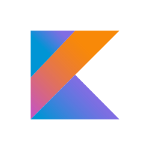

Languages in Computer Science
Java

Java is very popular among programmers and is used in software applications such as Android apps and big data technologies. It is also a great beginner language.
Python

Python is very similar to Java and is much simpler to learn. It is also used for beginners, and is rising in demand in the job market. Python is great for backend developement and data analysis.
Kotlin

Kotlin is used for Android applications. It is a mix between the funtionality of Java and simplicity of Python. It can also be used for browsers.
Swift
Swift is a programming language specifically designed for iOS, macOS, watchOS, and tvOS. It was developed by Apple. Developers are in high demand.
C++

C++ is an object oriented programming language created for operating systems and even hardware. C++ is currently not in high demand anymore and faces replacement from other languages such as Go and Rust.
SQL

SQL deals with database technologies for large businesses. It is used for big data collection and keeping data organized.
JavaScript

JavaScript is used to make websites more interactive. It is built into many web browsers and is added to almost every website.